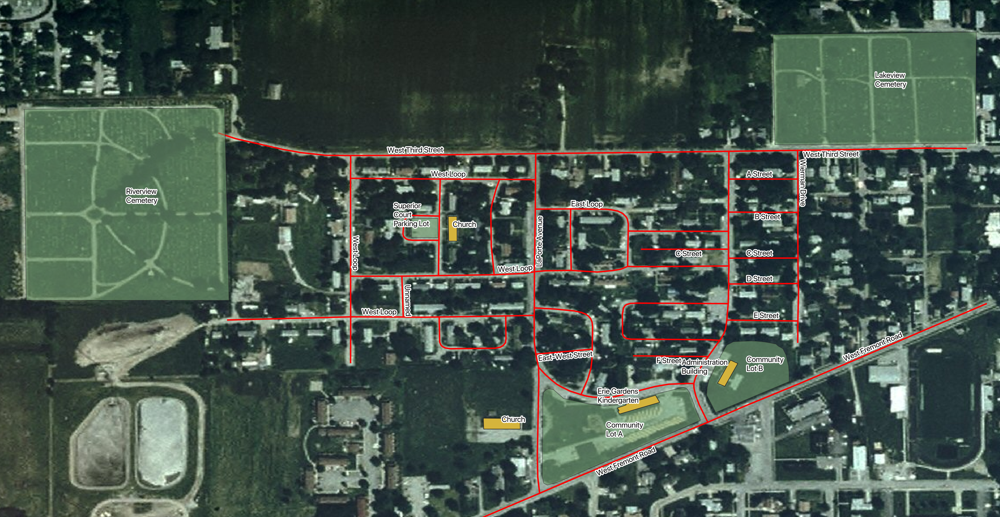

In this paper, we present a historical analysis of community formation in the Erie Gardens subdivision of Port Clinton, Ohio, a city of population about six thousand lying halfway between Toledo and Cleveland on the Lake Erie shoreline. Erie Gardens was built by the federal government around World War II to accommodate the influx of workers at a local ordnance works. After the war, the area was incorporated into the surrounding fabric of Port Clinton and gained as a slum reputation due to the low-cost nature of its housing stock.
After situating Erie Gardens within the historical context of World War II federal housing and prefabricated building techniques, we present the history of revitalisation efforts in the neighbourhood starting from the 1960s. We argue from this evidence that Erie Gardens became a vital community despite its artificial beginnings and infrastructural and socioeconomic challenges. In fact, its unique character and history arguably account for the strength of the grassroots movement. This account is complemented by a historical map of Erie Gardens during the wartime period, based on primary sources. Besides depicting this information on a map for the first time, the map gives a sense of how Erie Gardens evolved over time and matured into a distinct neighbourhood.
Erie Gardens is a subdivision of Port Clinton, Ohio built around 1941 to house workers at the Erie Ordnance Depôt about one mile to the northwest of Port Clinton at the present site of Erie Industrial Park. In the 2010 census, the area had a population of about 518 residents living in about 220 housing units . Erie Gardens is bounded by West Third Street to the north, Fremont Road to the south, Wilson Avenue to the east, and Port Clinton’s municipal boundary to the west. Most of the housing stock consists of prefabricated longhouses divided up into two or three apartment units. The street grid is highly irregular with some of the “streets” being little more than sidewalks. Port Clinton housing advocate Linda Hartlaub noted in 1988 article that “people didn’t want to live there. It was considered the slum of Port Clinton” . Negative local attitudes toward Erie Gardens derive from the low-cost nature of its housing and infrastructure combined with its isolated position within Port Clinton’s city fabric. Despite the attitudes, many Erie Gardens residents report a positive view of their neighborhood, as childhood resident Terry Witter expressed to the Port Clinton News Herald: “Maybe there was a stigma there, but I didn’t feel any of that. It was just a wonderful place to grow up” . We will see how Erie Gardens’ unique position within Port Clinton prompted a strong tradition of grassroots organisation beginning in 1969, although first we must place the neighbourhood’s construction in the larger context of World War II factory housing.
The rapid resumption of industrial activity prompted by World War II created massive housing shortages in the United States as workers flocked to factory towns to participate in the war effort and reviving economy. As notes, “the total wartime migration between 1941 and 1945 exceeded 30 million people, or one-fifth of the nation’s population… the urgent need for housing…to accommodate the large influx of factory workers resulted in the construction of units of simplified design which incorporated a minimum amount and variation of materials that could be assembled rapidly and cheaply”. This “rationalised” housing was composed of prefabricated sheets of such materials as concrete, plywood, composition board, gypsum, and Cemesto . The resulting units are low-lying and horizontally oriented structures (see [fig:block]) with simple interior plans.
Builder Albert Farwell Bemis proposed three tenets for the rational house: simplify by eliminating specialised spaces in favour of open floor plans; “streamline the construction process”; and apply industrial management to build economies of scale into the supply chain . argues that the rationalisation of housing became more acceptable during this time due to the wartime housing emergency, setting apattern for the suburban housing boom of the 1950s. To borrow another quote from Erie Gardens resident Terry Witter, “they weren’t made too luxuriously. We all had the same kind of living conditions” . (See [fig:house])
Although prefabricated housing suited the immediate needs of the war, there was concern even at the time that concentrations of low-quality housing could develop into slums after wartime production subsided . John Blandford, who became National Housing Administrator in 1943, pushed back against the original plan to dismantle all emergency housing within two years of the war’s end. Although this plan intended to avoid the development of slums, Blandford recognised its wastefulness and instead arranged to assist postwar homeowners in upgrading the housing to better materials .
Even though many World War II housing projects, including Erie Gardens and nearby MacArthur Park in Sandusky, Ohio would ultimately develop into low-income districts, Blandford’s plan recognised the value of wartime housing projects and their capacities to grow into full-fledged neighbourhoods after the war. Indeed, following the end of the war the Sandusky Register announced that “the Public Housing Authority plans to dispose of the Erie Gardens Housing project…several methods are being considered for disposal of the project, one of which would give the present tenants first chance to buy individual units” .
The substandard quality of Erie Gardens’ housing stock was recognised by the end of the 1960s, barely 20 years after the neighbourhood’s construction in 1941. The Sandusky Register reported on 14 March 1969 the formation of the Community Action Commission (CAC) for Erie Gardens, sponsored by the Office of Economic Opportunity in the context of the War on Poverty. The headline announced “Gripes Voiced In PC” and marked the beginning of Erie Gardeners’ recognition of their unique challenges, shared destiny, and need for grassroots advocacy . Residents at the meeting vented a long list of complaints with living in the neighbourhood, including a lack of recreational opportunities, poor maintenance of streets, poor housing maintenance by absentee landlords, inadequate trash collection, discrimination, and inadequate drainage systems.
The organising meeting of CAC inaugurated a tradition of grassroots organisation in Erie Gardens that continues to the present day. Shortly after the initial meeting, CAC garnered interest and held several meetings for the establishment of a neighbour’s credit union, citing “numerous complaints that loans are difficult to get for housing improvements for the Garden units” . Promoters of the credit union were aware of the step they were taking toward self-sufficiency and financial independence. The Register reported that “the meeting was successful, not only because of the enthusiasm it created, but because it was attended by some thirty people. One member stressed the fact that they would be on their own, grouped together in a common bond, helping one another” . Around the same time, CAC noted that they had successfully lobbied the Port Clinton City School District to provide playground equipment at the Erie Gardens kindergarten property (today the school bus depôt) and that CAC would sponsor local adult education, allowing residents to work toward a high school degree equivalent .
Yet the formation of CAC indicated that Erie Gardens, for better or worse, was situated outside the Port Clinton mainstream. Resident Sammie Yarborough raised the issue at a 27 March 1969 meeting by stating: “This is all city business which you can take to City Councilmen. I thought the purpose of the CAC was for community self help by helping each other. What about education, job training, things the city cannot provide?” Her insight is relevant because the CAC actually took on two roles, providing local support of the kind Yarborough describes, but serving as an advocacy group on behalf of Erie Gardens with the local power centres like Port Clinton City Council and Port Clinton City Schools. Conditions in Erie Gardens were inadequate because the city had neglected its young neighbourhood. Even the neighbourhood credit union was only a necessity because of lending discrimination by area banks. “The credit union, if it could be gotten off the ground, might be the best way for community self help”, noted Lynn Nichols at the same meeting. .
By the 1970s, although momentum for the credit union had fizzled out to no avail, CAC’s organising had placed Erie Gardens back on City Council’s political agenda. At this time, direct federal involvement in community planning was waning and being replaced by the devolved system of Community Development Block Grants (CDBG), which gave more discretion to local communities. The stage was set for an institutional push at City Hall for the health of a newly vocal Erie Gardens. The city government collaborated with Wood-Sandusky-Ottawa-Seneca Community Action Commission (WSOS) to gain CDBG funds on behalf of the neighborhood for housing and water line rehabilitation.
The Register reported in September 1975 that Port Clinton had applied for funding for street resurfacing and construction of a parking lot at Superior Court . By June 1980, Mayor John Fritz was calling for a city-sponsored report on needs in Erie Gardens that “might eventually be incorporated into a full-scale redevelopment plan” . Fritz noted many of the issues which had aroused residents at the 1969 meeting, namely water lines, sewer lines, deteriorating buildings, and limited parking. The city government and WSOS actively pursued grants during the 1980s, finally receiving a $655,000 Small Cities block grant in summer 1984 after two unsuccessful applications. An additional $125,000 was tacked on that fall . The money was distributed to property owners through a combination of direct grants and no-interest or low-interest loans, depending on income, including protections for low-income tenants to ensure that they would not be pushed out after landlords rehabilitated their buildings . After the program had been carried out, housing advocate Linda Hartlaub noted in 1988 that people were already noticing the difference of revitalisation efforts .
Today Erie Gardens retains its distinct character and tradition of neighbourly coöperation. In the late 2000s, the West End Conestoga group was founded by a coalition of the Mental Health and Recovery Board, Ottawa County United Way, City of Port Clinton, and Erie Gardens residents to promote development in the neighbourhood with an emphasis on social well-being. The name “West End” reflects the group’s effort to rebrand the area and remove the negative connotations associated with the name “Erie Gardens”. This name is also featured in the West End Community Park, the descendant of CAC’s 1969 playground equipment, which was extensively remodelled during the administration of Mayor Vince Leone (2011–2015), including all-new basketball courts.
The map presented here (Figure [fig:oldmap] depicts the original street names and some community locations in Erie Gardens. The old street names are found in Port Clinton ordinance 33-56 of September 25, 1956, around the time of Erie Gardens’ annexation by the city . The ordinance changed the makeshift names of a federal housing project (“A Street”, “B Street”, “West Loop Service Drive”) into real placenames, drawing from categories such as presidents (“Hoover Drive”, “Polk Drive”), Great Lakes (“Erie Court”, “Superior Court”), and US states (“Maryland Street”, “Ohio Street”). Erie Gardens is also notable in Port Clinton for its “named sidewalks” (see [fig:sidewalk]) between Portage and Harding Drives. These paths were originally lettered as A Street, B Street, C Street, D Street, and E Street. The ordinance gave them a homier touch, opting for Abbey Lane, Bataan Lane, Concord Lane, Delaware Lane, and Edison Lane.

Although the vast majority of Erie Gardens consists of residential units, we depict some community structures on the south end of the neighbourhood, directly off of Fremont Road. These buildings and lots were repurposed over time. Community Lot A, the present site of West End Community Park, was adjacent to the Erie Gardens Kindergarten building, which today serves as the Port Clinton City School District’s bus depôt. Community Lot B was the adjacent land across Portage Drive to the east and contained the Erie Gardens Administration Building. This was later repurposed into the administrative building for the Port Clinton Board of Education . It served this purpose until the construction of Port Clinton’s new middle school in 2012. The community lot names from the Erie Gardens’ plat are found on the Ottawa County Auditor’s Office interactive map . Also noted on my map parking area off Superior Court funded by the city in the 1970s in response to resident complaints .
The base vector data and current street map was imported from OpenStreetMap . I manually added the historical names, buildings, and areas using QGIS . The raster background comes from the ArcGIS tile server.

This paper places Erie Gardens in the historical context of federal wartime housing and outlines its development from a housing project into a full constituent neighbourhood of Port Clinton with a strong resident advocacy base. Grassroots organising beginning in 1969 led to the increased awareness and interest at City Hall in improving infrastructural conditions in Erie Gardens. As noted, despite many achievements since that time, community building efforts in Erie Gardens/West End continue to this day. Finally, the historical map of Erie Gardens shows the layout and placenames from the wartime era. Suggestions for further inquiry include a comprehensive survey of Erie Gardens residential structures and an investigation into how socioeconomic conditions of Erie Gardens have varied over time.